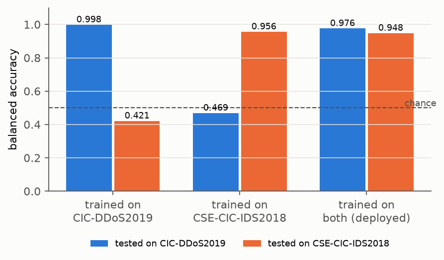
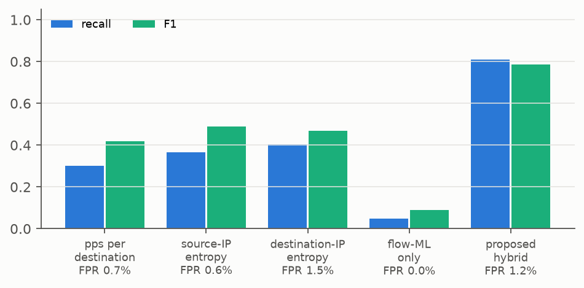
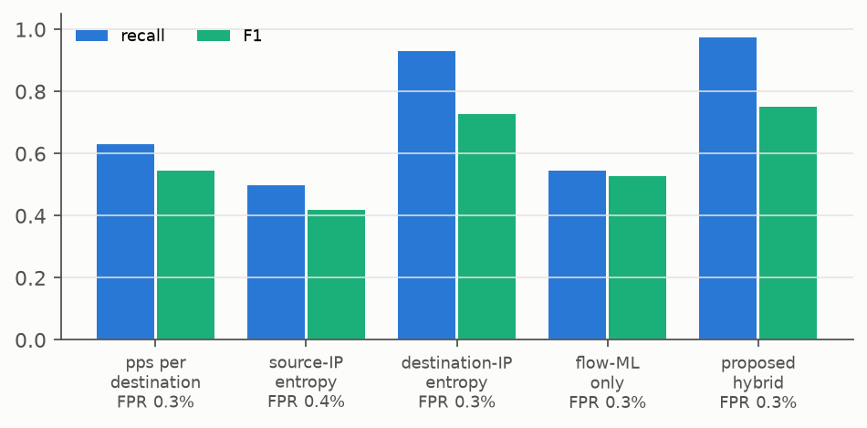
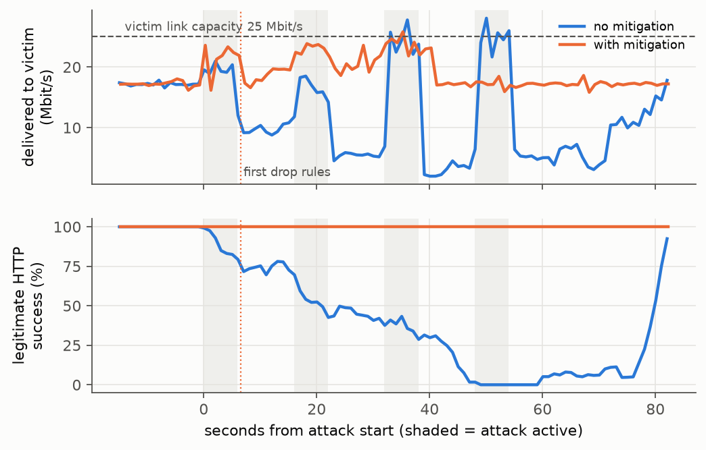
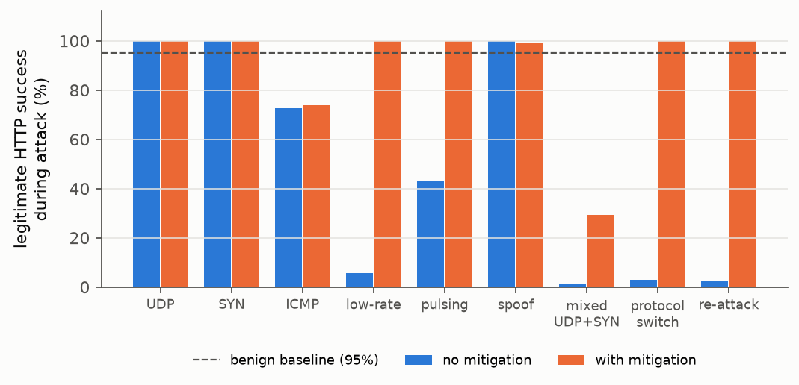

report/Results_Report.pdf): its 6-switch live demonstration and 8 repeated live runs remain valid and are not repeated here.| Review comment | What we changed | Where |
|---|---|---|
| No proper mathematical problem scenario / formulation | Scenario, observation model, hypotheses, detector, attribution rule and a constrained optimisation problem (quickest detection under a false-alarm constraint; goodput-maximising block set), plus a latency lower bound that explains the old 12.4 s. | Sec. 2 |
| Flow model trained on CIC-DDoS2019 only | Retrained on CIC-DDoS2019 + CSE-CIC-IDS2018 (5.5 M flows, 2.57 M benign, 655 k benign UDP). Cross-dataset test shows a single-dataset model collapses (balanced accuracy 0.42) on the other dataset; the combined model holds 0.976 / 0.948. The combined model is the one used live. | Sec. 4 |
| No standard SDN baseline (entropy, pps per destination) | Per-destination pps threshold, source-IP entropy per destination and destination-IP entropy (Mousavi & St-Hilaire) implemented, thresholds fixed on calibration data at the same false-positive budget as the hybrid (1 % on the chain testbed, 0.3 % on the 200-host testbed), evaluated on both. Hybrid F1 0.78 vs 0.74 (destination entropy), 0.54 (pps), 0.45 (source entropy) on the 200-host testbed. | Sec. 5, 7 |
| Attack never affects legitimate traffic; too little data (4 HTTP requests) | New testbed with a rate-limited victim access link. Without mitigation the attacks saturate the link and the controller: averaged over the 9 attacks, legitimate HTTP success is 48 %, DNS-like UDP 52 %, ping 47 %. With mitigation it is 89 %, 94 %, 86 %, with 0 legitimate hosts blocked. Each phase has hundreds to thousands of logged requests (44 000–56 000 HTTP requests and 110 000 UDP queries logged per session). | Sec. 8 |
| Live evidence on a small scenario; use ≥ 200 hosts | 25 OpenFlow switches (core / 4 aggregation / 20 edge), 200 hosts, 157 legitimate clients of five kinds, 40 attackers spread 2 per edge switch. | Sec. 6 |
| SYN, ICMP, low-rate, pulsing, spoofing, re-attack not tested live; (src,dst,proto) rule can be bypassed | All tested live. Rules are now (src,dst) for every protocol; repeat offenders are re-blocked immediately with an exponential hold-down; spoofing is handled by source-address validation that quarantines the ingress port (3.2 s). Re-attacks are re-blocked 1.3 s into a new burst. Still weak: ICMP floods are detected but not mitigated live (Sec. 8.2). | Sec. 3, 7, 8 |
| Benign test set only 3 runs with 4 clients | Benign evaluation now covers every benign window of two 200-host test sessions: 77 755 benign destination windows with 157 concurrent clients and four flash crowds, plus the old chain test set. | Sec. 7 |
| Latency 12.4 s (hybrid) vs 5.9 s (rules) | Cause identified (5 s polling × 2-of-3, Sec. 2.7). Polling is now 2 s and very confident windows confirm at once: mean detection latency is 3.2 s, against 5.4–7.7 s for the four baselines on the same runs. | Sec. 2.7, 7 |
| Gap of KNN to the best model too small | We agree. McNemar tests and bootstrap CIs show HGB, RF, DT and KNN within 0.5 points; the difference is statistically detectable on 120 k flows but not practically meaningful. We choose HGB for size/latency and state that the contribution is the destination-level layer, not the classifier. | Sec. 4.3 |
| Code / demo not seen | All code, configurations and raw logs of every run are in the submission; Sec. 10 lists the one-command reproductions. We apologise for missing the review session. | Sec. 10 |
An OpenFlow network G = (S ∪ H, E) has switches S, hosts H and one controller. A server v (the victim) is reached through an access link of capacity Cv. Legitimate clients L ⊂ H use v and other servers. An unknown attack set A ⊂ H (A ∩ L = ∅) starts at an unknown time τa. The controller cannot inspect payloads; it sees only flow-entry counters, polled every Δ seconds, and packet-in messages (ingress switch and port of a new flow). It must decide quickly that v is attacked, find the sources, and install few drop rules at their ingress switches without blocking legitimate clients or alarming on benign surges.
Windows t = 1, 2, … have length Δ. For flow entry f with cumulative counters Pf, Bf:
(the maximum over the path counts a flow crossing five switches once). Level 1 gives each flow a probability pf = gθ(zf) from 7 lifetime features. Level 2 builds, per destination, φd(t) ∈ ℝ19: number of sources nd, active/new flows, Λd, bit rate, mean packet size, top-source share, normalised source entropy Hd = −Σ qs log qs / log nd with qs = λs,d/Λd, protocol shares, response ratio ρd (bytes d→sources over bytes sources→d), rate change, packet-in rate and four aggregates of {pf}; and per (s,d) a 10-feature vector φs,d.
For every destination and window, H0: yd(t) = 0 (benign) against H1: yd(t) = 1 (d is the target of an active attack episode).
| Model | Definition | Tested live |
|---|---|---|
| Volumetric (UDP, TCP SYN, ICMP) | Σa∈A λa,v » Cv / packet size | yes |
| Low-rate | every λa,v small (25–45 pps), |A| = 40 | yes |
| Pulsing | λa,v(t) = λ · 1{t mod T < Ton}, T = 16 s, Ton = 6 s | yes |
| Multi-vector / protocol switching | protocol of a's traffic changes UDP → ICMP → TCP SYN | yes |
| Spoofed | src(packet) ≠ β(sw,port), the address bound to the ingress host port | yes |
| Re-attack | new episodes by the same A after the rules are removed | yes |
with k-of-n = 2-of-3, fast threshold ηf = 0.97, and Rd(t) the sources blocked at d in the last M = 300 s that are sending again.
μs,d is the source's pre-attack baseline rate to d: an EWMA of λs,d learned only in windows where d is NORMAL and below threshold. With β = 3, a source that was already sending at that rate before the attack (a video stream, a bulk transfer) is not blocked unless its rate triples. Attackers have μ = 0, and a heavy sender never seen in normal windows counts as corroborated. Finally, a source enters Bd only after meeting the condition in 2 consecutive windows (known repeat offenders at once). These terms implement the collateral constraint |Bv ∩ L| = 0 of Section 2.6, which the first mitigation runs violated (Section 8.3).
One rule per s ∈ Bd matches (ipv4_src = s, ipv4_dst = d) for all protocols at s's ingress switch. It is removed after Qe = Q·2min(e−1,3) quiet windows for the e-th episode on d. Anti-spoofing: for host port (sw,p) with bound address β, Nsw,p,d(t) counts packet-ins to d with src ≠ β; if N ≥ κ = 20 the port is quarantined for d.
The first problem is quickest change detection under a false-alarm constraint; the second picks the block set that keeps the victim link within capacity with no collateral blocking and a bounded flow-table budget. A and τa are unknown, so the controller solves a plug-in version: η is set on calibration data to meet ε, Bv is estimated by the source scorer, and |Bv ∩ L| = 0 is protected by λfloor and the corroboration condition. Every metric in this report is one of these quantities: window recall/FPR, detection rate and D, false-alarm episodes per hour, residual attack at v, collateral blocks and legitimate goodput.
The first window containing the attack ends at most Δ after τa, and k-of-n adds (k−1)Δ, so D ≥ (k − 1 + U)Δ with U ∈ (0,1]. With Δ = 5 s and k = 2 the bound is 5–10 s before any processing — the 12.4 s of the first report was structural, not a property of the detector. With Δ = 2 s and the fast path the bound is 1–4 s.
| Change | Reason | Code |
|---|---|---|
| Drop rule matches (src, dst) for every protocol | switching protocol bypassed (src,dst,proto) rules | hybrid_controller.py, rule_scope: src_dst |
| Repeat-offender memory (300 s) + exponential hold-down | re-attack and pulsing attacks after rule removal | decision_engine.py |
| Source-address validation, port quarantine | spoofed sources cannot be blocked by IP | hybrid_controller.py _anti_spoofing |
| Baseline-aware attribution (β = 3), new-source corroboration, 2-window source persistence | earlier mitigation runs blocked legitimate stream/bulk clients and missed ICMP attackers (Section 8.3) | decision_engine.py |
| Counter-delta fix for re-installed flow entries | a re-installed entry produced a one-window fake rate spike (e.g. 104 → 629 pps) | temporal_features.py |
| 2 s polling, fast confirmation ηf = 0.97 | latency | experiments/configs/large.yaml |
| Forwarding entries per (src, dst, protocol) on the large testbed | 5-tuple entries cost ~10 packet-ins per TCP connection; at 200 hosts the Python controller saturated | switch.py, DDOS_FLOW_GRANULARITY=pair |
| Flow model trained on two datasets | generalisation | experiments/scripts/flow_multidataset.py |
All changes are configuration-gated and the original defaults are unchanged. The 65 original unit tests pass, plus 6 new ones for fast confirmation, repeat-offender re-blocking with hold-down, baseline-aware attribution, source persistence, the counter-delta fix and protocol-agnostic rules (71 in total).
Data. CIC-DDoS2019 (folder 01-12) and four days of CSE-CIC-IDS2018 (15, 16, 21, 22 Feb: benign, DoS GoldenEye/Slowloris/SlowHTTPTest/Hulk, DDoS LOIC-UDP/HOIC; non-DoS classes dropped) were mapped to the same 7 OpenFlow-computable features. Rows whose features are identical but whose labels differ were removed. Splits are group-disjoint (flow groups for 2019; capture-minute × destination-port groups for 2018); training uses 20 000 rows per class per dataset; each test holdout keeps the natural class ratio (60 000 flows).
| Dataset (after cleaning) | Flows | Benign | Benign UDP |
|---|---|---|---|
| CIC-DDoS2019 | 1,831,822 | 16,733 | 7,302 |
| CSE-CIC-IDS2018 | 3,654,924 | 2,557,308 | 647,892 |
CIC-DDoS2019 contains only 7 k benign UDP flows. That is why the old model called ordinary large-packet UDP an attack (Section 3 of the first report). CSE-CIC-IDS2018 adds 648 k.

experiments/results/flow_multidataset/cross_dataset_metrics.csv.| Model | BA 2019 | FPR 2019 | BA 2018 | FPR 2018 | µs / flow | Size |
|---|---|---|---|---|---|---|
| KNN | 0.982 | 2.8 % | 0.942 | 5.6 % | 15.6–20.0 | 6.8 MB |
| Hist Gradient Boosting (deployed) | 0.976 | 3.5 % | 0.948 | 5.9 % | 3.6–4.5 | 0.30 MB |
| Decision Tree | 0.972 | 4.4 % | 0.947 | 5.4 % | 0.2–0.3 | 0.05 MB |
| Random Forest | 0.971 | 4.6 % | 0.947 | 4.9 % | 5.6–6.1 | 5.5 MB |
| Extra Trees | 0.915 | 15.5 % | 0.903 | 12.7 % | 3.0–3.1 | 2.5 MB |
| Logistic Regression | 0.666 | 37.4 % | 0.685 | 61.0 % | 0.3–0.5 | 2 kB |
| Naive Bayes | 0.594 | 1.8 % | 0.498 | 0.6 % | 0.3–0.4 | 2 kB |
BA = balanced accuracy. With a single dataset the in-dataset numbers are higher (HGB 0.998 on 2019, as in the first report), but those models do not transfer (Figure 1).
| HGB vs. | HGB right, other wrong | HGB wrong, other right | McNemar χ² | p | Δ BA (HGB − other), 95 % CI |
|---|---|---|---|---|---|
| Random Forest | 575 | 910 | 75.1 | 4×10−18 | −0.42 pts (−0.48 to −0.35) |
| KNN | 1,421 | 1,725 | 29.2 | 7×10−8 | −0.26 pts (−0.36 to −0.16) |
| Decision Tree | 803 | 997 | 20.7 | 5×10−6 | −0.23 pts (−0.31 to −0.16) |
| Extra Trees | 5,254 | 1,655 | 1873.7 | <10−300 | +3.75 pts (+3.60 to +3.91) |
| Logistic Regression | 42,740 | 1,418 | 38666 | <10−300 | +38.4 pts |
| Naive Bayes | 60,828 | 2,670 | 53265 | <10−300 | +38.1 pts |
Paired on the same 120 000 test flows (both holdouts). CI: stratified bootstrap, 1 000 resamples. Source: significance_combined.csv.
The review is right that the top models are not separable in practice. HGB, RF, DT and KNN are within 0.5 points of balanced accuracy. RF, KNN and DT are even slightly but significantly better than HGB on the pooled set. We keep HGB because it is 4–5× faster per flow than KNN, 23× smaller, and does not grow with the training set, and because its probabilities feed the window model. The model choice is not the contribution of this project. Sections 5 and 7 show that the gains come from the destination-level layer: the flow model alone, whichever classifier is used, detects almost nothing in the network at a 1 % false-positive budget.
Four baselines were added to the 21 held-out runs of the first report (6-switch chain, 5 s windows). Each baseline's threshold is the value that keeps calibration false positives at 1 %, set on the 14 calibration runs only. The test runs were never used for tuning.

| Method (2-of-3 confirmation) | Attack runs detected | Mean latency | Window recall | Window FPR | F1 |
|---|---|---|---|---|---|
| pps per destination | 9 / 18 | 13.0 s | 0.30 | 0.7 % | 0.42 |
| Source-IP entropy | 10 / 18 | 10.7 s | 0.37 | 0.6 % | 0.49 |
| Destination-IP entropy | 9 / 18 | 9.2 s | 0.40 | 1.5 % | 0.47 |
| Flow-ML only | 1 / 18 | – | 0.05 | 0.04 % | 0.09 |
| Proposed hybrid | 15 / 18 | 7.8 s | 0.81 | 1.2 % | 0.78 |
| Proposed hybrid + fast confirmation | 16 / 18 | 8.2 s | – | – | – |
At the same false-positive budget the hybrid finds more than twice the attack windows of any classic SDN baseline (recall 0.81 vs. ≤ 0.40) and detects more attack runs, sooner. One honest caveat: on this small test set the hybrid has more false-alarm episodes per hour (17.6) than the pps rule (7.6), from 7 episodes in total. The large testbed below measures this with far more benign traffic. Source: experiments/results/processed/chain_baselines/, produced by experiments/large/large_eval.py eval calibration test ....
| Item | Setting |
|---|---|
| Topology | 3-tier tree: core s1, aggregation s2–s5, edge s6–s25, 10 hosts per edge switch = 200 hosts. Links: host 100 Mbit/s, edge–aggregation 200 Mbit/s, aggregation–core 400 Mbit/s. Every flow to the victim crosses 5 switches. |
| Victim and servers | h200 = 10.0.0.200 (victim) on a rate-limited access link: 25 Mbit/s in the test sessions (50 Mbit/s in calibration; see Section 9); h199 and h198 are other servers that only see benign traffic. Each server runs a web server, a DNS-like UDP request/response service and TCP/UDP sinks. |
| Legitimate users (157) | 95 web clients (10 kB / 100 kB pages, think time 0.5–3 s; 60 % to the victim); 25 DNS-like UDP clients (4 queries/s, 1 s timeout); 12 UDP video-like streams (1 Mbit/s, 1200 B datagrams); 10 bulk TCP transfers (2 Mbit/s); 15 ping clients (2/s). About 17 Mbit/s of benign load reaches the victim. Flash crowds: every web client fetches the 100 kB page 6 times within 20 s. |
| Attackers (40) | 2 per edge switch, so attackers share switches with legitimate users. Tool: hping3. Rates 220–380 pps per attacker for floods (≈ 11–12 k pps offered in total, far above the victim link), 25–45 pps for low-rate, 120–180 pps with random source addresses for spoofing. |
| Controller | Ryu, 2 s polling, combined flow model (Section 4), window and source models refitted on the large calibration session only, OVS packet-in limit 400 pps per switch. |
| Sessions | calib (seed 1, detection only) → models and thresholds. test_det, test_det2 (seed 2, held out, detection only): detection metrics and attack impact without protection. test_mit (seed 2, same schedule, mitigation enabled): paired with test_det2 to measure mitigation. Two earlier mitigation runs (v1, v2) exposed attribution errors and are reported in Section 8.3. |
| Test schedule | benign 60 s → flash crowd → UDP flood → TCP SYN flood → ICMP flood → low-rate UDP → pulsing UDP (4× 6 s on / 10 s off) → spoofed UDP → mixed UDP+SYN → protocol switching (UDP 20 s → ICMP 20 s → SYN 20 s) → re-attack (3 bursts of 25 s, 15 s apart) → benign → flash crowd → benign. Attacks last 30–105 s with 40 s benign gaps. Attacker subsets, rates and packet sizes are re-drawn per attack. |
| Ground truth | Exact attacker IPs and epoch intervals written by the scheduler (session.json). Labels never come from the detector. |
| Measurement | Controller telemetry every 2 s; switch port counters of all edge ports every 1 s; a log line for every legitimate HTTP request, UDP query and ping reply. |
Scale engineering, reported for honesty: the first attempts failed because (i) simultaneous ARP from 200 hosts overloaded the controller, fixed with static ARP and a staggered warm-up; (ii) 5-tuple forwarding entries cost about 10 packet-ins per TCP connection, which saturated the single Python controller, fixed with (src,dst,protocol) forwarding entries; (iii) iperf3's rate pacing busy-loops (22 clients used all 8 cores), so it was replaced by sleep-paced senders.
Every method was fitted or thresholded on the calibration session only (seed 1) and evaluated on two held-out detection-only sessions, test_det and test_det2. Both use seed 2: new attacker subsets, rates and packet sizes, plus two attack types the calibration never saw, protocol switching and re-attack. test_det2 repeats the schedule after two fixes described in Section 8.3. With 200 hosts, about 100 destinations are active in every 2 s window, so a 1 % per-window budget would mean roughly one false window per poll somewhere in the network. Every method's threshold was therefore set at a 0.3 % calibration false-positive budget. Pooled over both sessions: 78 141 destination windows, 77 755 of them benign (157 concurrent clients, four flash crowds), 386 under attack, 18 attack episodes, 36 minutes.

experiments/results/processed/large_test*/window_metrics.csv.| Method | Recall | FPR | Precision | F1 | Attacks detected | Mean latency | False-alarm episodes |
|---|---|---|---|---|---|---|---|
| pps per destination | 0.63 | 0.35 % | 0.47 | 0.54 | 16 / 18 | 7.5 s | 34 (57/h) |
| Source-IP entropy | 0.56 | 0.45 % | 0.38 | 0.45 | 16 / 18 | 6.9 s | 22 (37/h) |
| Destination-IP entropy | 0.90 | 0.26 % | 0.63 | 0.74 | 17 / 18 | 5.4 s | 18 (30/h) |
| Flow-ML only (combined model) | 0.56 | 0.24 % | 0.53 | 0.54 | 16 / 18 | 7.7 s | 40 (67/h) |
| Proposed hybrid (2-of-3) | 0.97 | 0.26 % | 0.65 | 0.78 | 18 / 18 | 4.5 s | 24 (40/h) |
| Proposed hybrid (2-of-3 + fast confirmation) | 0.97 | 0.26 % | 0.65 | 0.78 | 18 / 18 | 3.2 s | 27 (45/h) |
All 2-of-3 confirmation except where stated. Recall/FPR/precision/F1 are per destination window (single window, no confirmation), pooled over both sessions. False-alarm episodes are new CONFIRMED states on any destination outside an attack on the victim, over all ~100 destinations and 36 minutes. Latency runs from the first attack packet to the first confirmed 2 s window.
| Attack | Hybrid + fast | Destination entropy | pps threshold | Source entropy | Flow-ML only |
|---|---|---|---|---|---|
| UDP flood (40 sources) | 3.7 | 5.7 | 1.7 | 1.7 | 5.7 |
| TCP SYN flood | 4.8 | 5.9 | 7.9 | 3.7 | – |
| ICMP flood | 1.3 | 12.5 | 1.3 | 1.3 | 23.9 |
| Low-rate UDP (25–45 pps each) | 5.1 | 1.1 | – | 5.1 | 5.1 |
| Pulsing (6 s on / 10 s off) | 3.0 | 5.0 | 8.9 | 7.4 | 8.1 |
| Spoofed sources | 2.6 | 4.7 (1 of 2) | 2.6 | 2.6 | 4.8 |
| Mixed UDP + SYN | 1.2 | 5.4 | 23.7 | 24.7 | 6.6 |
| Protocol switching UDP→ICMP→SYN | 4.4 | 4.1 | 6.2 | – | 5.3 |
| Re-attack (first burst) | 2.4 | 3.7 | 7.7 | 8.7 | 2.4 |
| Mean over detected | 3.2 | 5.4 | 7.5 | 6.9 | 7.7 |
The same attack schedule (seed 2) was run twice: test_det2 without protection (detection only) and test_mit with mitigation enabled. The 157 legitimate clients behave identically in both. Measures come from the clients' own logs (every HTTP request, every DNS-like UDP query, every ping) and from switch port counters, never from the controller.
The attacks hurt legitimate users through two channels:


experiments/results/large/test_det2|test_mit/legit_phases.csv.| Attack | First rule after | New rules (attackers) | Legit blocked | HTTP success no mit. → mit. | UDP query success | Ping delivery | Bulk TCP (Mbit/s) |
|---|---|---|---|---|---|---|---|
| UDP flood | 9.9 s | 38 / 40 | 0 | 1.00 → 1.00 (p95 1.04 → 0.04 s) | 1.00 → 1.00 | 0.99 → 0.99 | 2.07 → 2.11 |
| TCP SYN flood | 6.8 s | 36 / 40 | 0 | 1.00 → 1.00 | 1.00 → 1.00 | 0.98 → 0.98 | 2.10 → 2.10 |
| ICMP flood | 3.7 s | 1 / 40 | 0 | 0.73 → 0.74 | 0.80 → 0.79 | 0.16 → 0.22 | 0.93 → 0.93 |
| Low-rate UDP | – | 0 / 40 | 0 | 0.06 → 1.00 (p95 1.13 s) | 0.00 → 1.00 | 0.34 → 0.99 | 0.00 → 1.82 |
| Pulsing | 6.5 s | 40 / 40 | 0 | 0.43 → 1.00 | 0.69 → 1.00 | 0.33 → 0.99 | 0.45 → 2.10 |
| Spoofed sources | 3.2 s | 4 ports quarantined | 0 | 1.00 → 0.99 | 1.00 → 1.00 | 0.98 → 0.98 | 2.10 → 2.11 |
| Mixed UDP + SYN | 3.7 s | 34 / 40 | 0 | 0.01 → 0.29 | 0.11 → 0.66 | 0.02 → 0.58 | 0.04 → 0.95 |
| Protocol switching | – (already blocked) | 0 / 24 | 0 | 0.03 → 1.00 | 0.00 → 1.00 | 0.10 → 0.98 | 0.00 → 2.12 |
| Re-attack (3 bursts) | 1.3 s | 4 / 30 (26 still blocked) | 0 | 0.02 → 1.00 | 0.07 → 1.00 | 0.28 → 0.98 | 0.00 → 2.10 |
| Mean over the 9 attacks | 0 | 0.48 → 0.89 | 0.52 → 0.94 | 0.47 → 0.86 | 0.85 → 1.82 |
Benign reference (first benign period): HTTP success 1.00, p95 0.04 s; UDP queries 1.00; bulk TCP 2.0 Mbit/s offered. "New rules" counts rules installed during that attack. Rules persist across attacks (300 s hard timeout, repeat-offender memory), so for protocol switching and re-attack most bots were still blocked from earlier episodes. Because rules match every protocol, switching UDP → ICMP → SYN did not bypass them. Over the whole session: 157 rules, all 40 attackers blocked at some point, 4 spoofing ports quarantined, 0 legitimate hosts blocked. Source: experiments/results/large/mitigation_summary.csv.
What works: pulsing, low-rate, protocol switching and re-attack go from near-total loss of service to full service; repeat offenders are re-blocked 1.3 s into a new burst; spoofing ports are quarantined 3.2 s after onset; UDP-flood latency returns to the benign level. What does not work yet:
The final configuration was reached through three earlier mitigation runs on the same schedule, kept as an ablation. Each failure was traced to a cause before changing anything, and each fix was first validated offline by replaying the detection-only session (experiments/large/attribution_replay.py) before the next live run.
| Run | Attribution configuration | Segments | Attackers blocked | Legitimate hosts blocked | Who / cause |
|---|---|---|---|---|---|
| v1 | source model + corroborated rate rule | 5 (stopped) | 40 | 9 | 6 video streams + 3 bulk TCP clients of the victim: steady large-packet senders look like flood sources |
| v2 | + baseline-aware attribution (β = 3) | 14 | 40 | 6 | video streams: a re-installed flow entry gave a one-window fake rate spike (104 → 629 pps) |
| v3 | + counter-delta fix, peak-hold baseline, new-source corroboration | 14 | 40 | 5 | video streams: one-window spikes remained when several stats replies were missed in a row |
| final | + 2-window source persistence | 14 | 40 | 0 | – |
The lesson for the research problem is that the collateral constraint |Bv ∩ L| = 0 of Section 2.6 is the hard part at scale. Steady legitimate elephants and counter artefacts under control-plane stress both look like attack sources for a single window. Requiring a change relative to the source's own pre-attack behaviour and persistence over time removed every false block in this session without losing attacker coverage (97–98 % in every run).
| Result | Command (project root) | Output |
|---|---|---|
| Flow model, cross-dataset, McNemar | .venv/bin/python experiments/scripts/flow_multidataset.py | experiments/results/flow_multidataset/, artifacts/multidataset/ |
| Baselines on the chain test set | .venv/bin/python experiments/large/large_eval.py eval calibration test artifacts/experiments/temporal chain_baselines | experiments/results/processed/chain_baselines/ |
| 200-host sessions | sudo bash experiments/large/run_campaign.sh (calib, test_det), then run_tests2.sh (test_det2), run_tests4.sh (final test_mit) | experiments/results/large/{calib,test_det,test_det2,test_mit,test_mit_v1..v3}/ |
| Attribution ablation (offline / live) | .venv/bin/python experiments/large/attribution_replay.py large_test_det2 test_det2; mitigation_versions.py test_mit_v1 test_mit_v2 test_mit_v3 test_mit | printed tables |
| Metrics and figures | bash experiments/large/finalize.sh | experiments/results/processed/large_test/, report/v2/figures/ |
| Unit tests | .venv/bin/python -m pytest -q | 71 passed |
Each session directory contains the controller log (ryu.log), per-poll telemetry (telemetry.jsonl), the event log with every installed and removed rule (events.json), ground truth (session.json), per-second port counters of all 200 edge ports, and one log line per legitimate request. Formal model: docs/problem_formulation.md.